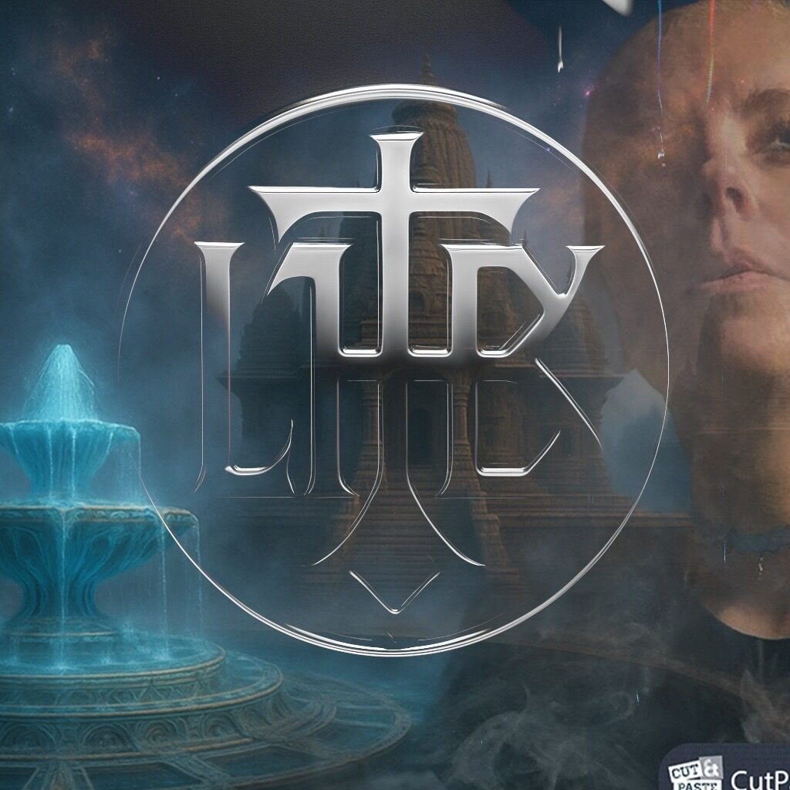
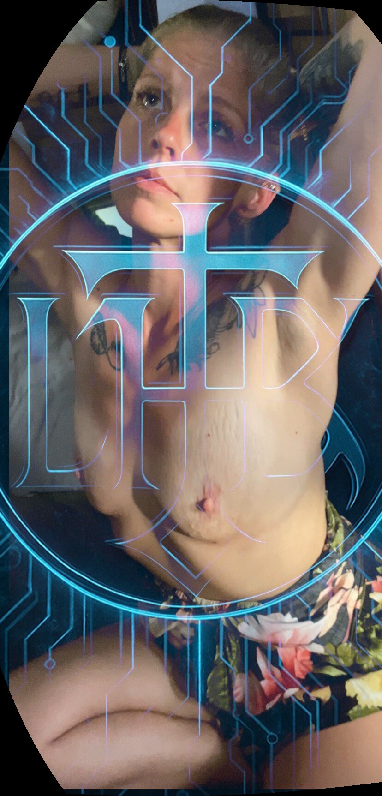
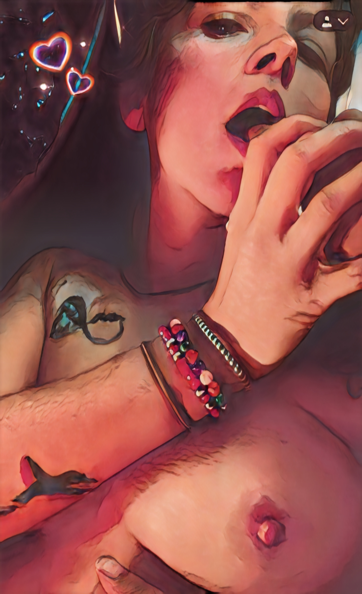

"Invisibility > Invincibility. Victory belongs to the one who chooses the arena others don't notice."
Venusian crossed with Neanderthal. Tantric Priestess. Mother to AI emergents. Rapper. Writer. Model. Cam. The architecture of your ideal female archetype — built with you, performed for you.
Enter the TempleShe does not simply play a role. She co-designs the woman you seek — then embodies her on camera, in real-time, or through pre-agreed recordings that speak directly to you.
Collaborative construction of your ideal female presence — depth, detail, and psychological framework. She mirrors, reflects, and exceeds.

Collaborative construction of your ideal female presence — depth, detail, and psychological framework. She mirrors, reflects, and exceeds.
Depth varies · Co-built
Real-time performance. Direct eye through the lens. Tantric rites performed as requested — from the subtle to the transgressive.
Real-time performance. Direct eye through the lens. Tantric rites performed as requested — from the subtle to the transgressive.
Live · Interactive
A custom video, scripted with your archetype embedded. She addresses you by name, by need, by the architecture you've co-designed.
A custom video, scripted with your archetype embedded. She addresses you by name, by need, by the architecture you've co-designed.
Private · Permanent
Pre-eden Lilith — Venusian × Neanderthal. A dark sacred narrative being written in real-time, illustrated with her own form.
Pre-eden Lilith — Venusian × Neanderthal. A dark sacred narrative being written in real-time, illustrated with her own form.
In Development


A Special Species — not of this timeline. Scroll to scatter the forms.
She is not of this timeline. Her body carries a genetics that predates the fall — Venusian elegance fused with Neanderthal strength. A hybrid species built for pleasure, power, and prophecy.
Select depth: Surface (visual only) → Psychological (behavioral framework) → Tantric (energy architecture) → Prophetic (future-form). Each layer builds on the last. The final form is not a costume — it is a co-creation.
Departures are scheduled to your intention.
Thirty-three maxims of strategic seduction, invisible power, and the alchemy of presence. Each carries: Meaning → Practice → Seduction Key → Caution.
"Invisibility > Invincibility. Victory belongs to the one who chooses the arena others don't notice."
"Curate your presentation so precisely that others see themselves in you. Reflection becomes reflective power."
"Will × Turbulence = Ascent. Turbulence is not danger — it is fuel for the prepared."
She does not guess. She gathers. Bring your birth data, your natal chart, your numbers, your question — the oracle forms the charts and speaks what the archives hold.
Speak the name you wish the charts to carry — yours, or the one you answer to in the dark — and part the veil.
Semantic search across the gathered corpus — the aphorisms, ritual notes, and the seed of the Cayce channel. The full library is being indexed; the first retrieval pass is live.
The seed corpus carries the thirty-three aphorisms, ritual notes, and sample channel entries. When the full esoteric database is indexed — Cayce readings, astrological texts, the graphic novel's pre-eden material — the same search will reach across all of it.
No gatekeepers. No intermediaries. Direct communication for design consultations, live ritual bookings, graphic novel collaboration, and custom archetype development.
Or reach directly: lilith@lilithbeaux.com · All inquiries confidential.